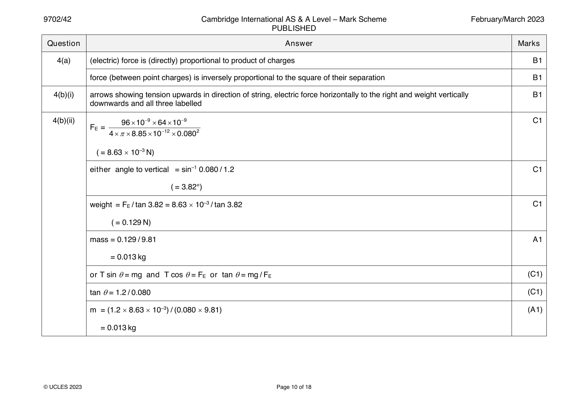
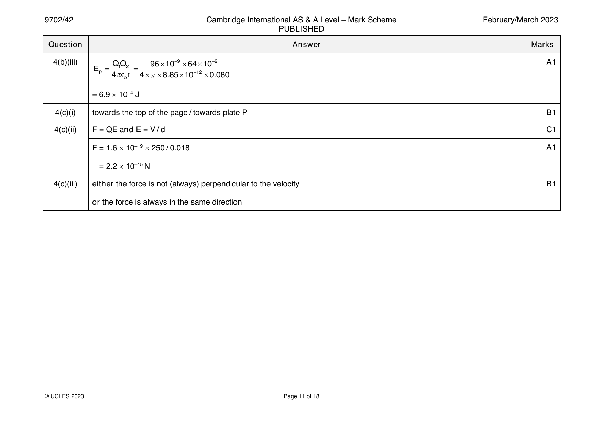
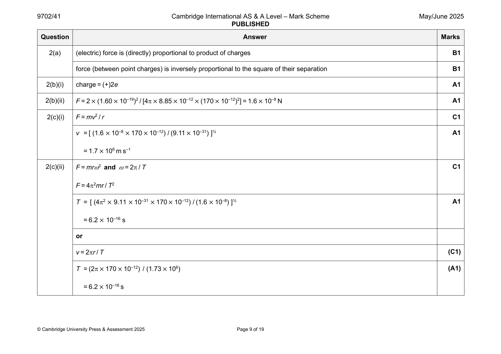
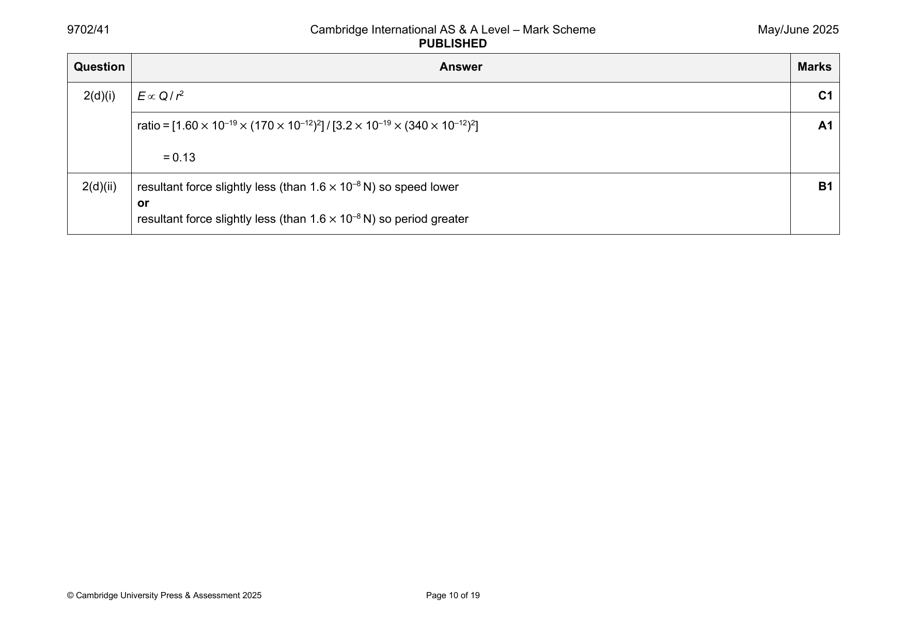

Try the new view →
9702-2022-m-42-q04
March 2022 · Paper 42 · Question 4 · 6 marks
4(a) direction of force B1
force on a positive charge B1
4(b)(i) Q C1
V =
4πε r
o
4.0×10 −9 −7.2×10 −9
+ = 0
4πε x 4πε (0.120 − x)
o o
( )
4 0.120 − x = 7.2 x
x = 0.043 m A1
4(b)(ii) fields are in the same direction so no B1
4(b)(iii) straight arrow drawn leftwards from X in direction between extended line joining Q and X and the horizontal B1
© UCLES 2022 Page 9 of 17
Official mark scheme pages: 9 · source PDF URL
9702-2022-mj-42-q02
May/June 2022 · Paper 42 · Question 2 · 13 marks
2(a) (electric) force is (directly) proportional to product of charges B1
force (between point charges) is inversely proportional to the square of their separation B1
2(b)(i) (electric) force is perpendicular to velocity (of particles) B1
force (perpendicular to velocity) causes centripetal acceleration B1
or
force does not change the speed of the particles
or
force has constant magnitude
2(b)(ii) F = e2 / 4x2 C1
0
= (1.60 10–19)2 / [4 8.85 10–12 (2 1.59 10–10)2] A1
= 2.28 10–9 N
2(b)(iii) F = mr2 and = 2 / T C1
or
F = mv2 / r and v = 2r / T
F = 42mr / T2 C1
T = √ [42 9.11 10–31 1.59 10–10 / (2.28 10–9)]
= 1.58 10–15 s A1
2(c)(i) electron and positron interact B2
positron is anti-particle of electron
(pair) annihilation occurs
Any two points, 1 mark each
mass of the electron and positron converted into photon energy B1
2(c)(ii) PET scanning B1
© UCLES 2022 Page 8 of 16
Official mark scheme pages: 8 · source PDF URL
9702-2022-on-41-q04
Oct/Nov 2022 · Paper 41 · Question 4 · 12 marks
4(a) (field line indicates) direction of force B1
force on a positive charge B1
4(b)(i) one straight line perpendicular to plates, starting on one plate and finishing on the other B1
five straight lines perpendicular to plates between the plates, uniformly spaced B1
downwards arrows on lines B1
4(b)(ii) E = V / d C1
= 2400 / 0.046 A1
= 5.2 104 N C–1
4(c)(i) smooth curve in region of field and straight line outside field B1
direction of deflection shown as downwards in region of field B1
4(c)(ii) helium nucleus has double the charge but four times the mass B1
velocity parallel to plates same and acceleration perpendicular to plates smaller (for helium) B1
final speed is lower (for helium) B1
© UCLES 2022 Page 9 of 15
Official mark scheme pages: 9 · source PDF URL
9702-2022-on-42-q05
Oct/Nov 2022 · Paper 42 · Question 5 · 10 marks
5(a) work done per unit charge B1
work done (on charge) in moving positive charge from infinity (to the point) B1
5(b)(i) radius = 0.060 m A1
5(b)(ii) V = Q / 4x C1
0
Q = (–) 850 4 8.85 10–12 0.060
or
Q = (–) 850 0.060 / 8.99 109
(any correct pair of V and x values from curve)
Q = – 5.7 10–9 C A1
5(c)(i) E = Q2 / 4x C1
P 0
= (5.67 10–9)2 / (4 8.85 10–12 0.46)
= 6.3 10–7 J A1
5(c)(ii) • force is repulsive so spheres move apart B3
• force in direction of motion so speed increases
• potential energy converted to kinetic energy so speed increases
• force decreases with distance so acceleration decreases
• momentum is conserved (at zero) (and masses are equal) so velocities are always equal and opposite
Any three points, 1 mark each
© UCLES 2022 Page 10 of 16
Official mark scheme pages: 10 · source PDF URL
9702-2022-on-43-q04
Oct/Nov 2022 · Paper 43 · Question 4 · 12 marks
4(a) (field line indicates) direction of force B1
force on a positive charge B1
4(b)(i) one straight line perpendicular to plates, starting on one plate and finishing on the other B1
five straight lines perpendicular to plates between the plates, uniformly spaced B1
downwards arrows on lines B1
4(b)(ii) E = V / d C1
= 2400 / 0.046 A1
= 5.2 104 N C–1
4(c)(i) smooth curve in region of field and straight line outside field B1
direction of deflection shown as downwards in region of field B1
4(c)(ii) helium nucleus has double the charge but four times the mass B1
velocity parallel to plates same and acceleration perpendicular to plates smaller (for helium) B1
final speed is lower (for helium) B1
© UCLES 2022 Page 9 of 15
Official mark scheme pages: 9 · source PDF URL
9702-2023-m-42-q04
March 2023 · Paper 42 · Question 4 · 12 marks


4(a) (electric) force is (directly) proportional to product of charges B1
force (between point charges) is inversely proportional to the square of their separation B1
4(b)(i) arrows showing tension upwards in direction of string, electric force horizontally to the right and weight vertically B1
downwards and all three labelled
4(b)(ii) 9610−96410−9 C1
F =
E
48.8510−120.0802
( = 8.63 10–3 N)
either angle to vertical = sin–1 0.080 / 1.2 C1
( = 3.82°)
weight = F / tan 3.82 = 8.63 10–3 / tan 3.82 C1
E
( = 0.129 N)
mass = 0.129 / 9.81 A1
= 0.013 kg
or T sin = mg and T cos = F or tan = mg / F (C1)
E E
tan = 1.2 / 0.080 (C1)
m = (1.2 8.63 10–3) / (0.080 9.81) (A1)
= 0.013 kg
© UCLES 2023 Page 10 of 18
4(b)(iii) QQ 9610−96410−9 A1
E = 1 2 =
p 4r 48.8510−120.080
o
= 6.9 10–4 J
4(c)(i) towards the top of the page / towards plate P B1
4(c)(ii) F = QE and E = V / d C1
F = 1.6 10–19 250 / 0.018 A1
= 2.2 10–15 N
4(c)(iii) either the force is not (always) perpendicular to the velocity B1
or the force is always in the same direction
© UCLES 2023 Page 11 of 18
Official mark scheme pages: 10, 11 · source PDF URL
9702-2023-mj-41-q01
May/June 2023 · Paper 41 · Question 1 · 11 marks
1(a)(i) force per unit mass B1
1(a)(ii) force per unit positive charge B1
1(a)(iii) similarity: B1
inversely proportional to distance (from point)
points of equal potential lie on concentric spheres
zero at infinite distance
Any point, 1 mark
difference: B1
gravitational potential is (always) negative
electric potential can be positive or negative
Any point, 1 mark
1(b)(i) g = GM / r2 M1
E = Q / 4r2 M1
0
algebra showing the elimination of r leading to M / Q = (1 / 4G) (g / E) A1
0
1(b)(ii) = 1 / (4 6.67 10–11 8.85 10–12) = 1.35 1020 (kg2 C–2) A1
or
= (8.99 109) / (6.67 10–11) = 1.35 1020 (kg2 C–2)
1(c)(i) E = gQ / M C1
= (1.35 1020 9.81 4.80 105) / (5.98 1024)
= 106 N C–1 or 106 V m–1 A1
1(c)(ii) same (direction) B1
© UCLES 2023 Page 6 of 16
Official mark scheme pages: 6 · source PDF URL
9702-2023-mj-43-q01
May/June 2023 · Paper 43 · Question 1 · 11 marks
1(a)(i) force per unit mass B1
1(a)(ii) force per unit positive charge B1
1(a)(iii) similarity: B1
inversely proportional to distance (from point)
points of equal potential lie on concentric spheres
zero at infinite distance
Any point, 1 mark
difference: B1
gravitational potential is (always) negative
electric potential can be positive or negative
Any point, 1 mark
1(b)(i) g = GM / r2 M1
E = Q / 4r2 M1
0
algebra showing the elimination of r leading to M / Q = (1 / 4G) (g / E) A1
0
1(b)(ii) = 1 / (4 6.67 10–11 8.85 10–12) = 1.35 1020 (kg2 C–2) A1
or
= (8.99 109) / (6.67 10–11) = 1.35 1020 (kg2 C–2)
1(c)(i) E = gQ / M C1
= (1.35 1020 9.81 4.80 105) / (5.98 1024)
= 106 N C–1 or 106 V m–1 A1
1(c)(ii) same (direction) B1
© UCLES 2023 Page 6 of 16
Official mark scheme pages: 6 · source PDF URL
9702-2023-on-41-q05
Oct/Nov 2023 · Paper 41 · Question 5 · 8 marks
5(a) work done per unit charge B1
work (done on charge) moving positive charge from infinity (to the point) B1
5(b) Any three points from: B3
Up to 2 points from:
• radius of sphere X is 2.0 m
• radius of sphere Y is 4.0 m
• radius of Y is double the radius of X
Up to 2 points from:
• charge on X is negative
• charge on Y is positive
• spheres carry opposite charges
Up to 1 point from:
• magnitudes of charges on the spheres are equal
5(c) particle is attracted to X or repelled from Y B1
or
resultant force on particle is towards X / away from Y / to the left
particle accelerates towards X / away from Y / to the left B1
(magnitude of) acceleration of particle increases B1
© UCLES 2023 Page 11 of 16
Official mark scheme pages: 11 · source PDF URL
9702-2023-on-42-q05
Oct/Nov 2023 · Paper 42 · Question 5 · 11 marks
5(a) (electric) force is (directly) proportional to product of charges B1
(electric) force (between point charges) is inversely proportional to the square of their separation B1
5(b) F = Q2 / 4x2 C1
0
6.3 10–17 = Q2 / [4 8.85 10–12 (3.8 10–6)2]
charge = 3.2 10–19 C A1
5(c)(i) negative B1
5(c)(ii) four straight lines perpendicular to the plates, starting on one plate and finishing on the other B1
lines equally spaced B1
arrows indicating direction downwards B1
5(c)(iii) E = V / d C1
mg = EQ C1
mass = (1200 3.2 10–19) / (9.81 0.052) A1
= 7.5 10–16 kg
© UCLES 2023 Page 10 of 15
Official mark scheme pages: 10 · source PDF URL
9702-2023-on-43-q05
Oct/Nov 2023 · Paper 43 · Question 5 · 8 marks
5(a) work done per unit charge B1
work (done on charge) moving positive charge from infinity (to the point) B1
5(b) Any three points from: B3
Up to 2 points from:
• radius of sphere X is 2.0 m
• radius of sphere Y is 4.0 m
• radius of Y is double the radius of X
Up to 2 points from:
• charge on X is negative
• charge on Y is positive
• spheres carry opposite charges
Up to 1 point from:
• magnitudes of charges on the spheres are equal
5(c) particle is attracted to X or repelled from Y B1
or
resultant force on particle is towards X / away from Y / to the left
particle accelerates towards X / away from Y / to the left B1
(magnitude of) acceleration of particle increases B1
© UCLES 2023 Page 11 of 16
Official mark scheme pages: 11 · source PDF URL
9702-2024-mj-42-q05
May/June 2024 · Paper 42 · Question 5 · 7 marks
5(a) work done per unit charge B1
work (done) moving positive charge from infinity (to the point) B1
5(b) Any three points from: B3
Up to 2 points from:
radius of sphere X is 0.30 m
radius of sphere Y is 0.10 m
radius of X is treble the radius of Y
Up to 2 points from:
charge on X is positive
charge on Y is positive
spheres X and Y carry charges of the same sign
Up to 1 point from:
(magnitudes of) charges on the spheres are equal
charges on the spheres have the same magnitude
5(c) proton remains at rest (in the position of release) M1
potential energy of proton is (already) at its minimum A1
or
(electric) forces (from spheres) on proton are equal and opposite
or
no resultant (electric) force on proton
or
resultant electric field strength (at proton) is zero
© Cambridge University Press & Assessment 2024 Page 10 of 16
Official mark scheme pages: 10 · source PDF URL
9702-2024-on-41-q05
Oct/Nov 2024 · Paper 41 · Question 5 · 10 marks
5(a) (electric) field equals (electric) potential gradient M1
reference to minus sign A1
5(b) • for potential to be zero, one potential must be positive and the other potential must be negative B3
• for potential to be zero, the charges must have opposite sign
• for field to be zero, the fields (due to X and Y) must be in opposite directions
• for field to be zero, the charges must have the same sign
• the signs of the charges cannot (simultaneously) be both the same and opposite (so not possible)
Any three points, 1 mark each
5(c)(i) V = (–) Q / 4ε x and V = (–) 2Q / 4ε y C1
X 0 Y 0
(V + V = 0 so) Q / 4ε x = 2Q / 4ε y leading to y = 2x A1
X Y 0 0
5(c)(ii) E = Q / 4ε x2 A1
X 0
5(c)(iii) E = 2Q / 4ε (2x)2 C1
Y 0
( = Q / 8ε x2)
0
(opposite charges so fields in same direction so magnitudes add): A1
E = (Q / 4ε x2) + (Q / 8ε x2)
0 0
= 3Q / 8ε x2
0
© Cambridge University Press & Assessment 2024 Page 10 of 15
Official mark scheme pages: 10 · source PDF URL
9702-2024-on-42-q06
Oct/Nov 2024 · Paper 42 · Question 6 · 10 marks
6(a) (electric) force is (directly) proportional to product of charges B1
force (between point charges) is inversely proportional to the square of their separation B1
6(b) at least four straight, radial lines to/from surface of sphere B1
at least four straight radial lines drawn, approximately equally spaced B1
arrows pointing away from the surface of the sphere B1
6(c)(i) radius = 3.2 cm A1
6(c)(ii) E = Q / (4x2) C1
0
Q = e.g. 2.2 105 4 8.85 10–12 0.0322 C1
= 2.5 10–8 C A1
6(c)(iii) • the (positive) charge is all the way around the surface B1
• a charge placed inside the sphere is pulled equally in all directions
• if the field was not zero, the charges would move (until field is zero)
• electric field lines go from positive charge to negative charge, and there are no negative charges inside the sphere
Any point, 1 mark
© Cambridge University Press & Assessment 2024 Page 10 of 14
Official mark scheme pages: 10 · source PDF URL
9702-2024-on-43-q05
Oct/Nov 2024 · Paper 43 · Question 5 · 10 marks
5(a) (electric) field equals (electric) potential gradient M1
reference to minus sign A1
5(b) • for potential to be zero, one potential must be positive and the other potential must be negative B3
• for potential to be zero, the charges must have opposite sign
• for field to be zero, the fields (due to X and Y) must be in opposite directions
• for field to be zero, the charges must have the same sign
• the signs of the charges cannot (simultaneously) be both the same and opposite (so not possible)
Any three points, 1 mark each
5(c)(i) V = (–) Q / 4ε x and V = (–) 2Q / 4ε y C1
X 0 Y 0
(V + V = 0 so) Q / 4ε x = 2Q / 4ε y leading to y = 2x A1
X Y 0 0
5(c)(ii) E = Q / 4ε x2 A1
X 0
5(c)(iii) E = 2Q / 4ε (2x)2 C1
Y 0
( = Q / 8ε x2)
0
(opposite charges so fields in same direction so magnitudes add): A1
E = (Q / 4ε x2) + (Q / 8ε x2)
0 0
= 3Q / 8ε x2
0
© Cambridge University Press & Assessment 2024 Page 10 of 15
Official mark scheme pages: 10 · source PDF URL
9702-2025-m-42-q02
March 2025 · Paper 42 · Question 2 · 7 marks
2(a) sketch: B1
line from x = R to x = 4R entirely in the negative region
curve with continuously decreasing magnitude and with gradient of continuously decreasing magnitude, starting at (R, ) B1
line passing through (2R, ½) and (4R, ¼) B1
2(b) horizontal straight line from t = 0 to t = 24 hours B1
line starting at (0, –) B1
© Cambridge University Press & Assessment 2025 Page 7 of 14
2(c) straight line with non-zero gradient from 0 to d B1
line with negative gradient from (0, V) to (d, 0) B1
Question Answer Marks
Official mark scheme pages: 7, 8 · source PDF URL
9702-2025-mj-41-q02
May/June 2025 · Paper 41 · Question 2 · 11 marks


2(a) (electric) force is (directly) proportional to product of charges B1
force (between point charges) is inversely proportional to the square of their separation B1
2(b)(i) charge = (+)2e A1
2(b)(ii) F = 2 × (1.60 × 10–19)2 / [4 × 8.85 × 10–12 × (170 × 10–12)2] = 1.6 × 10–8 N A1
2(c)(i) F = mv2 / r C1
v = [ (1.6 × 10–8 × 170 × 10–12) / (9.11 × 10–31) ]½ A1
= 1.7 × 106 m s–1
2(c)(ii) F = mr2 and = 2 / T C1
F = 42mr / T2
T = [ (42 × 9.11 × 10–31 × 170 × 10–12) / (1.6 × 10–8) ]½ A1
= 6.2 × 10–16 s
or
v = 2r / T (C1)
T = (2 × 170 × 10–12) / (1.73 × 106) (A1)
= 6.2 × 10–16 s
© Cambridge University Press & Assessment 2025 Page 9 of 19
2(d)(i) E Q / r2 C1
ratio = [1.60 × 10–19 × (170 × 10–12)2] / [3.2 × 10–19 × (340 × 10–12)2] A1
= 0.13
2(d)(ii) resultant force slightly less (than 1.6 × 10–8 N) so speed lower B1
or
resultant force slightly less (than 1.6 × 10–8 N) so period greater
© Cambridge University Press & Assessment 2025 Page 10 of 19
Official mark scheme pages: 9, 10 · source PDF URL
9702-2025-mj-42-q06
May/June 2025 · Paper 42 · Question 6 · 11 marks
6(a) plate X marked as negative and plate Y marked as positive B1
6(b)(i) E = V / x C1
= (58 × 103) / 0.041 A1
= 1.4 × 106 N C–1
6(b)(ii) ma = eE C1
a = (1.60 × 10–19 × 1.41 × 106) / (9.11 × 10–31) A1
= 2.5 × 1017 m s–2
6(c)(i) eV = hc / C1
or
eV = hf and f = c /
(1.60 × 10–19 × 58 × 103) = (6.63 × 10–34 × 3.00 × 108) / M1
clear conversion from m to pm leading to = 21 pm A1
6(c)(ii) X-rays B1
6(c)(iii) Any two points from: B2
• waves are passed into structure and transmitted waves detected
• different parts of the structure absorb different fractions of energy
• difference in detected / transmitted intensities used (to form image)
© Cambridge University Press & Assessment 2025 Page 14 of 18
Official mark scheme pages: 14 · source PDF URL
9702-2025-mj-43-q02
May/June 2025 · Paper 43 · Question 2 · 11 marks
2(a) (electric) force is (directly) proportional to product of charges B1
force (between point charges) is inversely proportional to the square of their separation B1
2(b)(i) charge = (+)2e A1
2(b)(ii) F = 2 × (1.60 × 10–19)2 / [4 × 8.85 × 10–12 × (170 × 10–12)2] = 1.6 × 10–8 N A1
2(c)(i) F = mv2 / r C1
v = [ (1.6 × 10–8 × 170 × 10–12) / (9.11 × 10–31) ]½ A1
= 1.7 × 106 m s–1
2(c)(ii) F = mr2 and = 2 / T C1
F = 42mr / T2
T = [ (42 × 9.11 × 10–31 × 170 × 10–12) / (1.6 × 10–8) ]½ A1
= 6.2 × 10–16 s
or
v = 2r / T (C1)
T = (2 × 170 × 10–12) / (1.73 × 106) (A1)
= 6.2 × 10–16 s
© Cambridge University Press & Assessment 2025 Page 9 of 19
2(d)(i) E Q / r2 C1
ratio = [1.60 × 10–19 × (170 × 10–12)2] / [3.2 × 10–19 × (340 × 10–12)2] A1
= 0.13
2(d)(ii) resultant force slightly less (than 1.6 × 10–8 N) so speed lower B1
or
resultant force slightly less (than 1.6 × 10–8 N) so period greater
© Cambridge University Press & Assessment 2025 Page 10 of 19
Official mark scheme pages: 9, 10 · source PDF URL
9702-2025-on-41-q05
Oct/Nov 2025 · Paper 41 · Question 5 · 10 marks
5(a) work done per unit charge B1
work (done) moving positive charge from infinity (to the point) B1
5(b)(i) potential (due to proton) = (1.60 10–19) / (4 8.85 10–12 10 10–12) C1
or
potential (due to electron) = (–1.60 10–19) / (4 8.85 10–12 110 10–12)
V = [(1.60 10–19) / (4 8.85 10–12)] [(10–1 – 110–1) 1012] = 130 V A1
5(b)(ii) V = [(1.60 10–19) / (4 8.85 10–12)] [(30–1 – 90–1) 1012] C1
= (+) 32 V A1
5(b)(iii) cross drawn midway between the electron and the proton B1
5(b)(iv) line from (10, +130) to (110, –130) B1
curve getting shallower until x = 60 pm, crossing V = 0 at (60, 0) and then getting steeper after x = 60 pm B1
curve passing through (30, ±32) and (90, ±32) B1
© Cambridge University Press & Assessment 2025 Page 12 of 17
Official mark scheme pages: 12 · source PDF URL
9702-2025-on-43-q05
Oct/Nov 2025 · Paper 43 · Question 5 · 10 marks
5(a) work done per unit charge B1
work (done) moving positive charge from infinity (to the point) B1
5(b)(i) potential (due to proton) = (1.60 10–19) / (4 8.85 10–12 10 10–12) C1
or
potential (due to electron) = (–1.60 10–19) / (4 8.85 10–12 110 10–12)
V = [(1.60 10–19) / (4 8.85 10–12)] [(10–1 – 110–1) 1012] = 130 V A1
5(b)(ii) V = [(1.60 10–19) / (4 8.85 10–12)] [(30–1 – 90–1) 1012] C1
= (+) 32 V A1
5(b)(iii) cross drawn midway between the electron and the proton B1
5(b)(iv) line from (10, +130) to (110, –130) B1
curve getting shallower until x = 60 pm, crossing V = 0 at (60, 0) and then getting steeper after x = 60 pm B1
curve passing through (30, ±32) and (90, ±32) B1
© Cambridge University Press & Assessment 2025 Page 12 of 17
Official mark scheme pages: 12 · source PDF URL